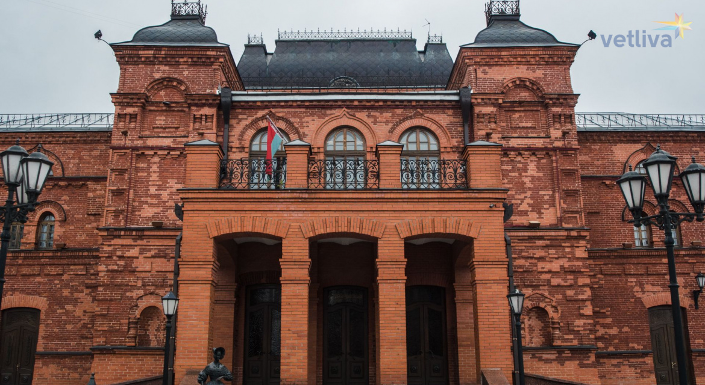

Могилевский драматический театр

Театральная жизнь Могилева - это примечательное во всех смыслах явление, а
история его театра вот уже более века не оставляет никого равнодушным,
заставляя по-новому переосмысливать уже происшедшее, задумываться над
настоящим с тем, чтобы предвосхитить будущее. Тысячу раз был прав
Н.В.Гоголь, написав, что "театр ничуть не безделица и вовсе не пустая
вещь, если примешь в соображение то, что в нем может поместиться вдруг
толпа, и что вся эта толпа, ни в чем не сходная между собой, может вдруг
потрястись одним потрясением, зарыдать одними слезами и засмеяться одним
всеобщим смехом. Эта такая кафедра, с которой можно много сказать миру
добра". И это вполне подтверждает театральное прошлое могилевщины, которое
изобилует эпизодами, значимыми не только для летописи уездного городка, но
и всей культурной жизни Беларуси. Причем некоторые из них по силе накала
страстей и драматизму событий не уступают трагедиям Эсхила. Хотелось бы,
может быть впервые, взглянуть на историю Могилева через призму социальных
и культурных явлений, которые, в конечном итоге, способствуют формированию
как нравственных качеств каждого могилевчанина в отдельности, так и города
в целом. Тернист и многотруден был более чем 730-летний путь древнего
поселения над Днепром. Гордыми и свободолюбивыми были его жители,
отличавшиеся долготерпением, самоотверженностью, талантливостью и чувством
здорового оптимизма в сочетании с бесконечным милосердием, консерватизмом
и наивностью. А гостеприимность, юмор, народная сметливость, вера и
надежда всегда помогали им с честью выйти из самых каверзных ситуаций
истории. Некогда зажиточный и самостоятельный город со своими замковыми
укреплениями и валами, составляющими как бы особый редут среди укреплений,
располагался возвышеннее всей прилегающей местности. С одной стороны его
окружал "величавый Днепр", а с другой - Дубровенка, "тут же впадающая в
Днепр". "За Днепром предместье Луполово; между рекою и самим городом
пространная равнина версты в две, ежегодно во время разливов залитая
водою. Высокая гора Костра отделяет самый город от равнины и Днепра.
Вокруг всего города проведен земляной насыпной вал". А какие чудные
перезвоны устраивались на колокольнях церквей: "Спаса, Ильи, Успения,
Николы, Троицы, Рождества Богородицы, Вознесения Господня, Козьмы и
Дамьяна", расположившихся со всех сторон города. Да и с кем только и чем
не торговал Могилев, имеющий особые привилегии от королей, "Киев, Канев и
Черкасы, Торнь, Гданьск и Кенигсберг" получали отличнейший "мед, воск,
сало, постное масло, деготь; вывозилось даже вино. Торгово-промышленная
деятельность Могилева усиливалась и простиралась даже до Москвы". Чем не
лакомый кусочек для пришлых? Скупые материалы научных исследований
зафиксировали первые проявления театральной жизни Могилева, восходящие к
1698 г., когда любители разыгрывали перед зеваками на рыночной площади
диалоги, отражающие народные чаяния. Надо заметить, что тогдашним
"скоморохам" было, что обсуждать. Бурные военные события, грабежи и поборы
завоевателей на протяжении XVII и XVIII вв. превратили некогда богатый
промышленный город Могилев с гордым и самолюбивым народом в заштатное
местечко. Одна из трагедий произошла 8 сентября 1708 г. Опасаясь, чтобы
город не достался Карлу XII во время Северной войны (1700-1721 гг.), Петр
I приказал сжечь Могилев, который за один день был превращен в развалины и
пепелище. "Сгорели церкви, растопились колокола, разрушились золоченые
куполы, тысячи жителей остались без крова, без пищи, почти без платья.
Многие оставили навсегда сожженный город, ушли в другие литовские города,
к родным и знакомым, и там поселились. Оставшиеся жили в наскоро
устроенных шалашах за городом; многие нашли приют в православных и
католических монастырях, хотя и полуразрушенных; наконец большинство
искало убежища за Днепром в предместьях Луполово, которого, за неимением
лодок, припрятанных жителями, не успели зажечь".